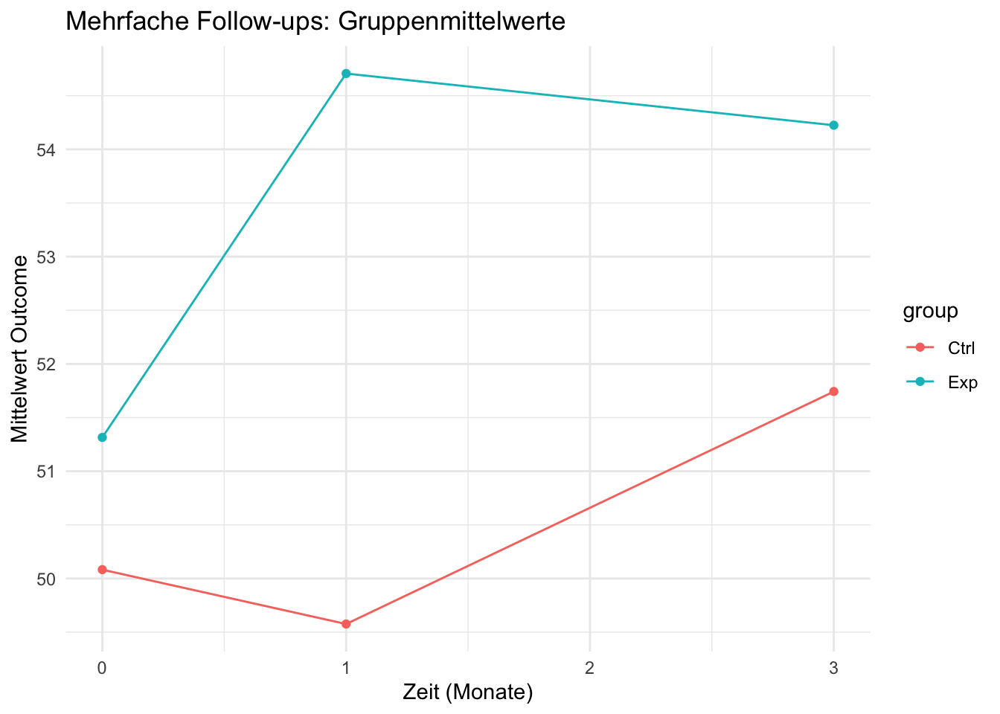

$rct_plot
$multi_plot
$its_plot
Messzeitpunkte allein erlauben noch keine eindeutige Trennung verschiedener Einflussfaktoren. Dafür werden meist zusätzlich eine geeignete Kontrollgruppe oder mehrere Messungen vor und nach der Intervention benötigt.
X O
Die Zielvariable wird ausschließlich nach der Intervention erhoben.
Vorteil: geringer Erhebungsaufwand.
Einschränkung: Veränderungen gegenüber dem Ausgangszustand können nicht bestimmt werden. Ohne geeignete Vergleichsgruppe sind kausale Schlussfolgerungen kaum möglich.
O₁ X O₂
Dieselbe Gruppe wird vor und nach der Intervention untersucht.
Vorteil: Veränderungen innerhalb der Gruppe werden sichtbar.
Einschränkung: Veränderungen können neben der Intervention auch durch Reifung, Regression zur Mitte oder zeitgleiche externe Einflüsse entstanden sein.
R O₁ X O₂
R O₁ O₂
Interventions- und Kontrollgruppe werden vor und nach der Intervention untersucht. Bei einer randomisierten Zuweisung steht R für die Randomisierung.
Vorteil: Die Veränderung in der Interventionsgruppe kann mit der Veränderung in der Kontrollgruppe verglichen werden. Eine korrekt durchgeführte Randomisierung stärkt die interne Validität.
O₁ X O₂ O₃ …
Zusätzliche Nachmessungen ermöglichen die Untersuchung von Entwicklungsverläufen, verzögerten Wirkungen und der Nachhaltigkeit von Interventionseffekten.
O₁ O₂ O₃ O₄ X O₅ O₆ O₇ O₈
Viele Messzeitpunkte vor und nach der Einführung einer Intervention ermöglichen es, bestehende Trends und Veränderungen nach dem Interventionsbeginn zu untersuchen.
Bei intensiv längsschnittlichen Designs werden Daten in kurzen Abständen erhoben, beispielsweise täglich oder mehrmals pro Tag.
Diese Designs eignen sich zur Untersuchung kurzfristiger Prozesse, intraindividueller Veränderungen und zeitlich dynamischer Wirkungen.
$rct_plot
$multi_plot
$its_plot
Testen Sie Ihr Wissen mit zufällig ausgewählten Single-Choice-Aufgaben: